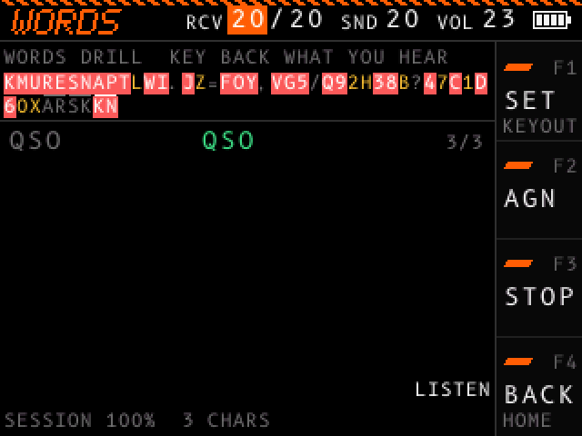
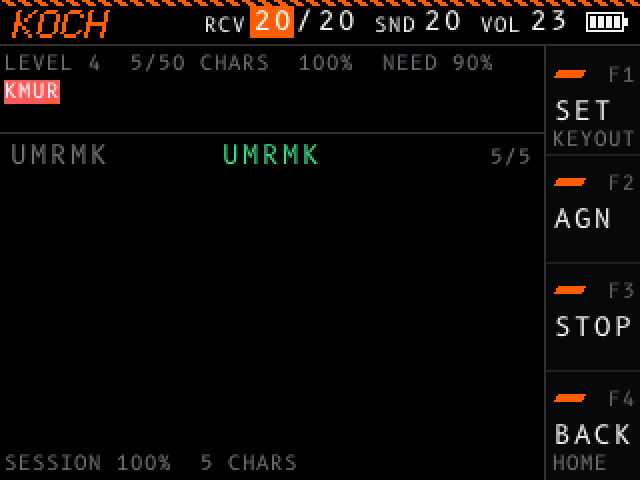

Receive drills¶
In a receive drill, the device sends a group of characters, and you key back what you copied. The device then shows the group with each character marked right or wrong.
To start, open RECEIVE in the menu, then the drill. The header shows the name of the drill. For a ragchew to copy, see Ragchew in the ON AIR list.
| Drill | What the device sends |
|---|---|
| KOCH | Groups of 5 characters from the Koch characters of your level. |
| WORDS | One common word or abbreviation heard on the air, such as QTH, 5NN or <BK>. |
| CALLS | One US callsign. |
| NINJA | One word from the content pack, then the voice says it. See NINJA. |
| HEAD | Words that get longer as you copy them, then two words, then a QSO line. See HEAD. |
The device sends at CHAR SPEED, with FARNSWORTH spacing when you set it. See the RECEIVE section in Settings. The RCV value in the header shows the speed, such as 20/20, or 20/10 with Farnsworth spacing.
How a drill runs¶

- The device sends a group. The state at the right of your copy shows
LISTEN. - The state shows
YOUR TURN. Start to key what you copied within 5 seconds. You can also start while the group still plays, except in HEAD. - While you key, the state shows
KEYING. When you stop keying for three word gaps, your copy ends. - The device scores your copy and shows it in the list. The next group starts after about 1 second.
If you do not start to key within 5 seconds, the group counts as missed when you copy the next one. After two such groups in a row, the drill pauses, and neither group counts: the status line shows NO COPY FOR 2 GROUPS: PAUSED. Key any character, or press F3 (GO), to go on. The character you key does not count as copy.
To hear the group again, key ? alone as your copy.
What the screen shows¶

- The top line: in KOCH, your level and your progress to the next level, such as
LEVEL 5 30/50 CHARS 80% NEED 90%: the characters scored at this level, up to the last 50, the percent of them you copied, and the percent the next level needs. - The character set, each character in the color of how well you copy it. Green: you know it. Amber: not enough tries to tell. Red, inverted: weak. Gray: not sent yet. KOCH shows the characters of your level, and a line marks the newest one. The other drills show all 44 characters.
- In HEAD, the top line shows your rung and what it sends, such as
RUNG 3 OF 8 1 WORD OF 5 CHARS. - The list of recent groups. Each row shows the group that was sent, then your copy with each character marked: green for right, red and inverted for wrong,
_for missed. The score shows at the right, such as4/5. - In HEAD, each item takes two rows: what was sent, then your marked copy under it. The list shows the last 3 items.
- Your copy as you key it, with the state at the right:
LISTEN,YOUR TURN,KEYINGorPAUSED. - The footer: your score for this session, such as
SESSION 85% 120 CHARS. Before your first score, and while you wait to key, it says what to do. While the drill is paused, it says how to go on.
NINJA¶
NINJA works like Morse Code Ninja: the device sends a word, and then the voice says it. You can just listen, or copy it in your head and key it back first.
- The device sends a word. The state shows
LISTEN. - The state shows
YOUR TURN. To be scored, start to key the word within 1.5 seconds. - If you key, the device scores your copy as in the other drills, then the voice says the word.
- If you do not key, the voice says the word, and the list shows it with no score.
- The next word starts about 1 second after the voice ends.
The words are the ham words and abbreviations of the content pack, then the most common English words: 500 by default. NINJA WORDS in the DRILLS section of the settings sets how many. An abbreviation on its own comes with its meaning: after QTH, the voice says "Q T H. location".
NINJA needs the content pack. Without it, the drill shows CONTENT PACK MISSING: INSTALL IT and sends nothing. Install again, with the content pack.
HEAD¶
HEAD is a head-copy ladder. You copy each item in your head while it plays, and key it back after it ends. Keying while it plays does not count.
| Rung | What the device sends |
|---|---|
| 1 | One word of 2 or 3 characters |
| 2 | One word of 4 |
| 3 | One word of 5 |
| 4 | One word of 6 |
| 5 | One word of 7 to 10 |
| 6 | Two words of 2 to 4 each |
| 7 | Two words of 3 to 6 each |
| 8 | A line of a QSO, such as NAME BOB BOB or RIG IC7300 100W |
Three copies in a row all right move you up one rung. Three copies in a row under half right move you down one. An extra character makes a copy not all right. A ? repeat does not count.
The words come from the content pack: ham words and common English words. HEAD needs the content pack, as NINJA does. The device keeps your rung, also after you turn it off.
The Koch method¶
The KOCH drill starts at level 2, with K and M. You move up one level when you copy at least 90 % right over 50 characters. Each level adds the next character in this order:
K M U R E S N A P T L W I . J Z = F O Y , V G 5 / Q 9 2 H 3 8 B ? 4 7 C 1 D 6 0 X <AR> <SK> <KN>
The score counts extra characters you key as errors, the same as missed ones. After 50 characters below 90 %, the count starts again. When you move up, the status line shows the new character, such as LEVEL UP: ADDED U.
The drill picks weak characters more often, and the newest character twice as often.
The device keeps your level and your progress toward the next level while you use other screens. The level stays after you turn the device off.
Controls¶
| Control | Action |
|---|---|
| F1 (SET) | Pauses the drill and opens the settings at the RECEIVE section, or at DRILLS from NINJA. F4 (BACK) there returns, and the next group plays at the new settings. |
| F2 (AGN) | While a group plays or waits for your copy: sends the group again, and clears your copy. Blank while the drill is paused. |
| F3 (STOP or GO) | Pauses the drill, or starts it again. While the drill is paused, a character you key also starts it again. |
| F4 (BACK) | Pauses the drill and opens the RECEIVE list of the menu. Click the drill or RESUME there to go on. |
| Dial turn | Changes the focused header value. See Header values. |
Dial turn on LEVEL |
KOCH only: sets your level, 2 to 44. A new level starts its progress count from zero; turn back to the level you left and its count returns. |
| Dial click | Moves the focus to the next header value. |
| Dial hold | Turns the device off. |
| Key | Keys your copy. |